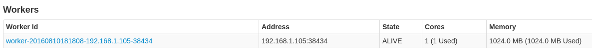
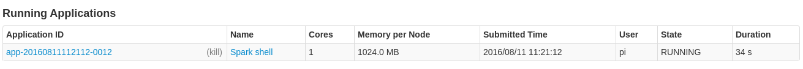

Spark集群搭建
Spark手动集群搭建 http://spark.apache.org/docs/latest/spark-standalone.html
In addition to running on the Mesos or YARN cluster managers, Spark also provides a simple standalone deploy mode. You can launch a standalone cluster either manually, by starting a master and workers by hand, or use our provided launch scripts. It is also possible to run these daemons on a single machine for testing.
除了可以在Mesos或者YARN集群管理器上运行Spark外，Spark还提供了独立部署模式。你可以通过手动启动一个master和workers,或者使用提供的脚本来手动地启动单独的集群模式。你也可以在一台单独的机器上启动这些进程用来测试。
1.配置和启动Master
- 在
conf/spark-env.sh文件中配置MasterIP和本地IP
SPARK_MASTER_PORT=4050
SPARK_LOCAL_IP=192.168.1.104
SPARK_MASTER_IP=192.168.1.104- 你可以通过执行以下脚本单独模式的master
./sbin/start-master.sh- 启动完成以后可以在网页中看到SparkUI

其中url是Master的地址和端口，节点连接需要
2.配置和启动Slave
类似地，你可以使用下面的脚本启动一个或多个连接到master的worker
./sbin/start-slave.sh spark://192.168.1.104:4050
3.启动spark-shell连接到Master
./spark-shell --master spark://192.168.1.104:4050链接成功后就可以进行实时的作业,SparkShell将一直在集群中运行等待任务

scala> val data = Array(1,2,3)
data: Array[Int] = Array(1, 1, 2,4)
scala> sc.parallelize(data).map(_+1).distinct().collect
res4: Array[Int] = Array(2, 3, 5)执行代码后我们就可以在Job中看见执行过程，并在控制台输出结果

如果我们使用IDEA进行集群运算，那么将需要打包成Jar：
var conf = new SparkConf().setAppName("Scapi").setMaster("spark://192.168.1.104:4050")
var sc = new SparkContext(conf)
sc.addJar("/home/pi/doc/WORKSPACE/github_demo/alicloud-ams-demo/Scala2/out/artifacts/Scala2_jar/Scala2.jar")运行速度将会非常缓慢，因为需要向集群提交Jar文件。